~The Bevel Tool~
3/10/2025
The Bevel (Last Operation) dialog box OPTIONS
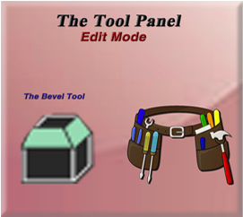
We can also find the Bevel tool inside of the Edit work space’s Tool Panel. The tool button will look like this.
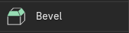
How to Create a Bevel
To start, bring your start up cube into the Edit Workspace.
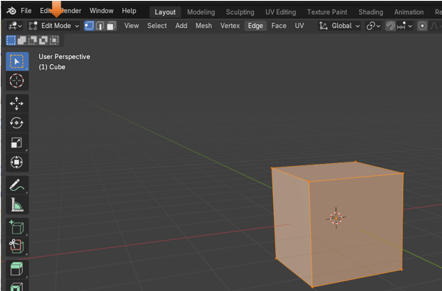
Go to Face Mode and select the top face, on the cube in the viewport.
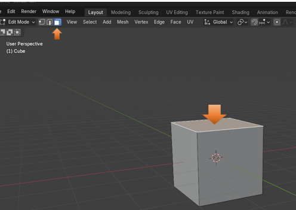
Now select your bevel tool, from the left-hand tool panel. You can also just hit the letter E on the keyboard, as it is the hot key for this bevel tool, and will bring it to it in just the same way.
Notice that this tool does not come with any bottom right arrow, so what you see here, is what you get, with no other options.
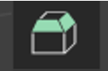
You will see this yellow type of arrow pointing out of the top of the box. This is the Bevel tool, and you can use it to create the bevel for the cube.
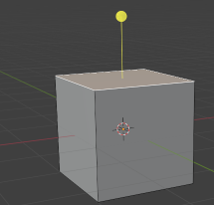
You want to pull upward on the yellow circle at the top of this weird type of arrow to begin the bevel. The more you pull upward on it, the larger the bevel will be on the top edges of the box.
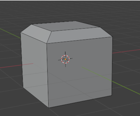
Just click off of the cube, to accept your bevel.
The Last Operation Dialog Box
Before you click off of it though, you will have access to the last operation dialog box, in which you can make changes to your bevel.
If you click on Vertices instead of edges the cube bevel will look like this.
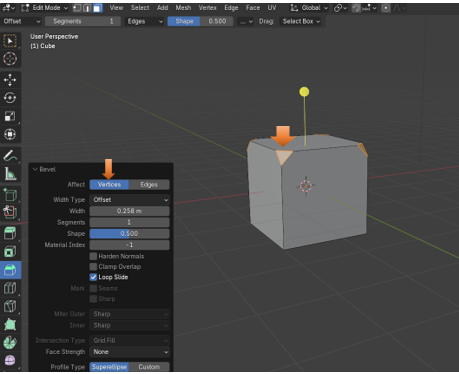
The Bevel (Last Operation) dialog box OPTIONS
You can control the size of the bevel with the Width setting.
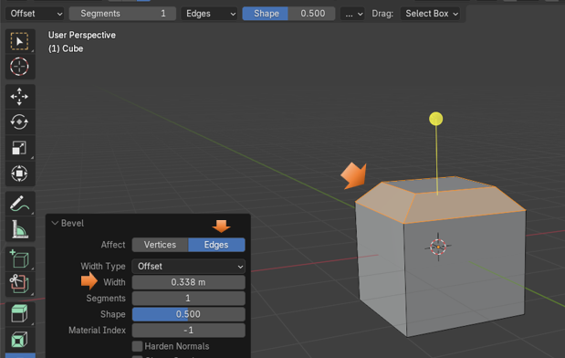
You can also set the Segments. Here I set it to 3, and you can see that I now have 3 bevels on the same edges.
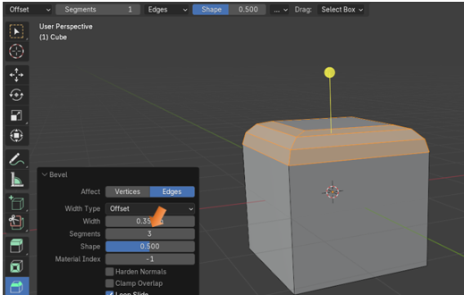
Bevel One Edge
You can just bevel One Edge. Go into Edge mode and select one edge
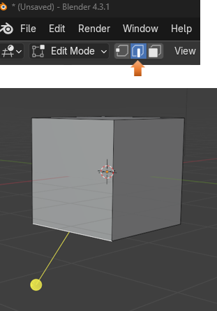
Now pull downward on that stick to bevel that edge
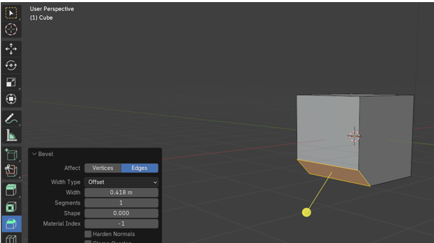
Now you can roll the mouse wheel while you create this single bevel and create more segments. It will look like this when you do it though.
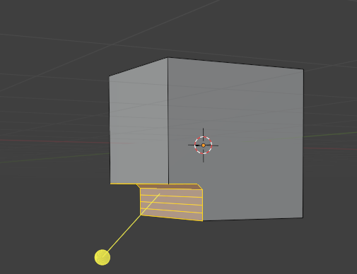
You might want this inward look for the bevel, but maybe you don’t, and if you actually want this to curve outward instead of inward, you would raise the level of the Shape option to get it to look the way that you want it.
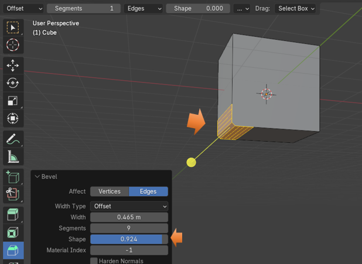
Working with Vertices
You can also add segments to vertices too.
You can start out by selecting the back edge. Like this.
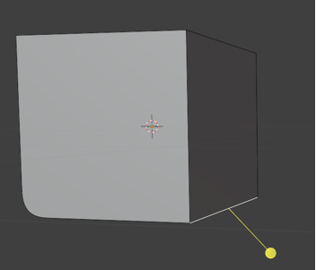
Now Bevel the Edge, again by just pulling downward on this yellow stick.
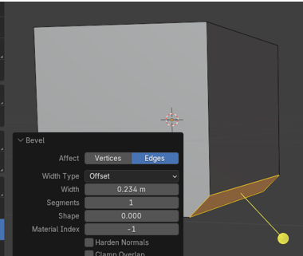
Now turn the Affect to Vertices instead of Edges
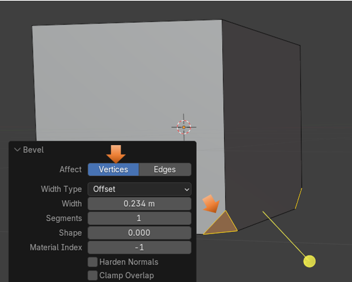
When you start to increase the segments on these vertices, the curve will start out by creating inward. That is because the Shape option will reset to 0 (for some reason). As you see I increased the Segments here to 7 and this created the dent in the edge.
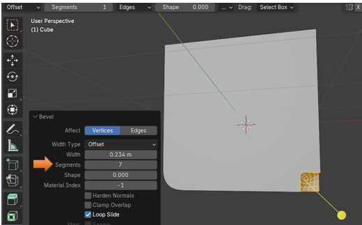
Now increase the Shape setting to pull this dent outward. Here it is set to .500
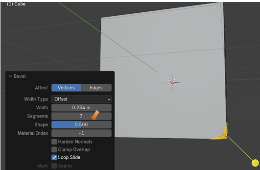
If you set it all the way to 1.000, the vertices will look more like points, instead of bevels.
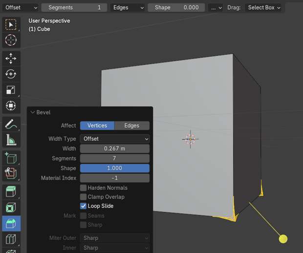
Ok, I did not really want those points so, I reset the bevel back to .500
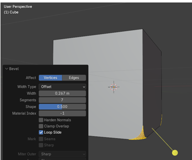
Here is the cube in object mode.
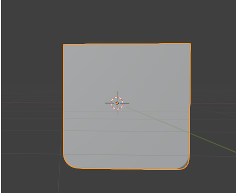
Well, that is about it for the Bevel tool. Practice your beveling and see what you can come up with.